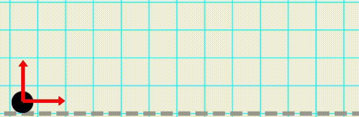
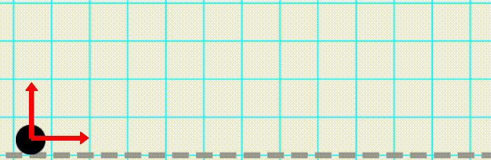

Kinematics is employed to establish connections between displacement, velocity, acceleration, and time, independent of the factors driving the motion. This discussion will focus on the kinematics of objects, regardless of whether they are as small as particles or as large as humans, automobiles, rockets, or airplanes, without taking into account their specific shape and size.
Some type of motions:
 

Distance
Distance represents the total length traveled by a moving particle or object within a specified time frame. It is denoted by S generally.
SI unit of distance is m. And it is a scalar quantity.
Displacement
The displacement denotes the alteration in the position vector, specifically, the vector connecting the initial and final positions. In short displacement is the shortest possible path between the initial and final position.
It's SI unit is m. And obviusly it is a vector quantity.
If a particle journeys from point A to point C along the route ABC as shown below
The distance covered corresponds to the actual path length ABC, whereas the displacement can be expressed as: \[\Delta{r} = \vec{r} = \vec{r_c} - \vec{r_a} \]
When a particle undergoes motion in a straight line without any change in direction, the magnitude of its displacement is equivalent to the distance traveled. However, in cases where the particle changes direction during its motion, the displacement is consistently less than the total distance traveled. Thus,
\[ {|displacement|} \leq {|distance|} \]
A paticle starts to perform circular motion in a circle of radius r and it came back to initial position after completing the circular path.
Average Speed
The average speed of a particle in a time interval is defined as the distance travelled by the particle divided by the time interval.
Mathematically, average speed can be expressed as: \[v_{\text{avg}} = \frac{\text{Total Distance Traveled}}{\text{Time Interval}}\]
It's SI unit is m/s. And avergae speed is a scalar quantity
Average Velocity
The average velocity of a particle in a time interval is defined as the displacement of the particle divided by the time interval.
It's SI unit is m/s. And avergae speed is a vector quantity
Mathematically, average velocity can be expressed as: \[\vec{v}_{\text{avg}} = \frac{\text{Total Displacement in a time interval}}{\text{Time Interval}}\]
For a particle starting from A and reaching to C. Average Velocity can be expressed as: \[\vec{v}_{\text{avg}} = \frac{\Delta{\vec{r}}}{\Delta{t}} = \frac{\vec{r_c} - \vec{r_a}}{\Delta{t}} \]
Instantaneous Velocity
The instantaneous velocity of a particle at a given time \(t\) is defined as follows. Consider the average velocity of the particle over a very short time interval from \(t\) to \(t + \Delta t\), denoted as \(\vec{v}_{\text{avg}}\). This average velocity can be expressed as: \[ \vec{v}_{\text{avg}} = \frac{\Delta \vec{r}}{\Delta t} \] Here, \(\Delta \vec{r}\) represents the displacement that occurs during the time interval \(\Delta t\).
Now, as we reduce \(\Delta t\) to an infinitesimally small value, we can determine the limit of \(\frac{\Delta \vec{r}}{\Delta t}\) as \(\Delta t\) approaches zero. This limit represents the instantaneous velocity \(\vec{v}\) of the particle at time \(t\), and it can be expressed as: \[ \vec{v} = \lim_{{\Delta t \to 0}} \frac{\Delta \vec{r}}{\Delta t} = \frac{d\vec{r}}{dt} \] In this context, \(\frac{d\vec{r}}{dt}\) signifies the rate of change of the displacement vector \(\vec{r}\) with respect to time \(t\), which gives the instantaneous velocity of the particle at the specific time \(t\).
Instantaneous Speed
For very small time intervals, the displacement \(\Delta \vec{r}\) occurs along the path of the particle's motion. In this case, the magnitude of \(\Delta \vec{r}\) is equal to the distance \(\Delta s\) traveled during that interval. Therefore, the magnitude of velocity is given by: \[v = \left|\frac{d\vec{r}}{dt}\right| = \frac{|\Delta \vec{r}|}{\Delta t} = \frac{\Delta s}{\Delta t} \]
This magnitude represents the instantaneous speed at time \(t\). Simply instantaneous speed ia the magnitude of instantaneous velocity and can be mathematically expressed as: \[v = |\vec{v}| \]
Average Acceleration
Average acceleration is defined as the ratio of the change in velocity, denoted as \(\Delta \vec{v}\), to the time interval \(\Delta t\) during which this change takes place. Therefore, the average acceleration (\(\vec{a}_{\text{avg}}\)) is calculated as follows: \[ \vec{a}_{\text{avg}} = \frac{\Delta \vec{v}}{\Delta t} = \frac{\vec{v_f} - \vec{v_i}}{\Delta t} \] Here, \(\vec{v_f}\) represents the final velocity vector, and \(\vec{v_i}\) represents the initial velocity vector.
Instantaneous Acceleration
The instantaneous acceleration, on the other hand, is defined at a specific instant in time and is expressed as the limit when \(\Delta t\) approaches zero. It can be represented as: \[ \vec{a} = \lim_{{\Delta t \to 0}} \frac{\Delta \vec{v}}{\Delta t} = \frac{d\vec{v}}{dt} \]
When a particle is constrained to move along a straight line, the description becomes relatively straightforward.
We select the straight line as the X-axis and designate a convenient moment in time as \(t = 0\). Typically, the origin is defined at the location where the particle is positioned at \(t = 0\).
The particle's position at any given time \(t\) is then represented by its coordinate \(x\) at that time. The velocity of the particle, in this context, is a measure of how the position \(x\) changes concerning time \(t\) can be written as: \[\vec{v} = \frac{d{\vec{x}}}{dt} \]
And the acceleration can be expressed as: \[\vec{a} = \frac{d{\vec{v}}}{dt} = \frac{d}{dt}\left(\frac{d{\vec{x}}}{dt}\right) = \frac{d^2{\vec{x}}}{dt^2}\]
-
Motion under constant Acceleration
Suppose the acceleration of a particle is constant and denoted as \(a\). Furthermore, let the particle's initial velocity at time \(0\) be \(u\), and the velocity at time \(t\) be \(v\).
At \(t\) = 0 the particle is at \(x\) = 0. As time changes from 0 to \(t\) the position changes from 0 to \(s\).
In this scenario, you can express the relationship between these variables using the following equations:
\[v = u + at \] \[s = ut+\frac{1}{2}at^2 \] \[v^2 = u^2 + 2as \]
Remember that \(x\) represents the position of the particle at time \(t\) and not (in general) the distance travelled by it in time 0 to \(t\)
If the velocity and acceleration have opposite sign, object is speeding up slowing down
-
Free Fall
Certainly, the classic example of motion in a straight line with constant acceleration is free fall near the Earth's surface. In this scenario, when we neglect air resistance and a body is dropped from rest near the Earth's surface, it falls along a vertical straight line.
The acceleration experienced by the body due to gravity is in the vertically downward direction, and its magnitude is nearly constant if the height from which the object falls is much smaller than the radius of the Earth (approximately 6400 kilometers). This constant acceleration is approximately equal to \(9.8m/s^2 \)
In the context of motion along the vertical axis with vertically upward as the positive Y-axis, and with acceleration due to gravity acting downward, you can express the equations of motion as follows:
1. Equation for Velocity at Time \(t\): \[v = u - gt\] Here, \(v\) represents the velocity in the Y-direction at time \(t\), \(u\) is the initial velocity in the Y-direction at \(t = 0\), and \(g\) is the acceleration due to gravity (\(g = 9.8 \, \text{m/s}^2\) or \(32 \, \text{ft/s}^2\)).
2. Equation for Displacement at Time \(t\): \[y = ut - \frac{1}{2}gt^2\] In this equation, \(y\) denotes the Y-coordinate, which represents the height above the origin at time \(t\). The variables \(u\), \(g\), and \(t\) have the same meanings as in the first equation.
3. Equation for Velocity at Time \(t\) in Terms of Displacement: \[v^2 = u^2 - 2gy\] This equation relates the final velocity (\(v\)) to the initial velocity (\(u\)) and the displacement (\(y\)) in the Y-direction. It demonstrates how the velocity changes as an object moves vertically under gravity.
In these equations, \(u\) is the initial velocity in the Y-direction at time \(t = 0\), \(v\) is the velocity in the Y-direction at time \(t\), and \(y\) is the displacement (height above the origin) at time \(t\). The negative sign in the acceleration term (-g) signifies that gravity acts in the negative Y-direction. These equations are fundamental in the analysis of motion in free fall near the Earth's surface.
An object is released from a tower of Height H. What is the speed of ball at the time of hitting the ground? \(2gH \) \(\sqrt{\text{2gH}} \)
-
Vetically upward thrown bodies
An example of motion in a straight line can be when a body is thrown vertically upwards from the Earth's surface. In this scenario, when we neglect air resistance and the body will follow a vertical straight motion.This type of motion is often referred to as "vertical projectile motion."
The motion involves two directions: ascending and descending. As the object moves upward, it eventually reaches its highest point before beginning its descent.
In the context of motion along the vertical axis with vertically upward as the positive Y-axis, and with acceleration due to gravity acting downward.
Let us suppose that a body is thrown vertically upwards with initial velocity \(u\). And the acceleration due to gravity is \(g\).
While Ascending:
1. Equation for Velocity at Time \(t\): \[v_{\text{top}} = u - gt_1\] Here, \(v_{\text{top}}\) represents the velocity of the particle at topmost point which is acheived after time \(t_1\),
2. Equation for Displacement at Time \(t\): \[H = ut_1 - \frac{1}{2}gt_1^2\] In this equation, \(H\) denotes the distance between ground and the topmost point. The variables \(u\), \(g\), and \(t_1\) have the same meanings as in the first equation.
3. Equation for Velocity in Terms of Displacement: \[v_{\text{top}}^2 = u^2 - 2gH\] All variables have the same meanings as mentioned in above equations
While Descending
1. Equation for Velocity at Time \(t\): \[v = v_{\text{top}} + gt_2\] Here, \(v\) represents the velocity of the particle at the time of hitting the ground which is acheived after time \(t_2\) from the topmost point.,
2. Equation for Displacement at Time \(t\): \[H = v_{\text{top}}t_2 + \frac{1}{2}gt_2^2\] The variables have the same meanings as in the above equations.
3. Equation for Velocity in Terms of Displacement: \[v^2 = v_{\text{top}}^2 + 2gH\] All variables have the same meanings as mentioned in above equations
Now, here comes the intriguing fact that \( v_{\text{top}} = 0 \). It's your task to determine the reason behind this.
After solving the equations above, we will be able to determine... \[\text{Maximum Height, }H = \frac{u^2}{2g} \] \[t_1 = t_2 = \frac{u}{g} \] \[\text{Time of Flight} = t_{\text{flight}} = t_1 + t_2 = \frac{2u}{g} \]
A ball is thrown upwards with velocity u. What will be the velocity at the time of hitting the ground? u -u
Motion in a plane can be understood as the vector sum of two independent 1D motions along two mutually perpendicular directions. These motions in perpendicular directions do not influence each other.
We designate a suitable moment as \(t = 0\) and place the origin at the location where the particle is positioned at \(t = 0\). Within this plane, we choose two mutually perpendicular directions, which we refer to as the X and Y-axes.
The position of the particle at a given time \(t\) is entirely specified by its coordinates \((x, y)\). The coordinates at time \(t + \Delta t\) are represented as \((x + \Delta x, y + \Delta y)\). In Figure, positions at \(t\) and \(t + \Delta t\) are marked as points A and B, respectively. The displacement during the time interval from \(t\) to \(t + \Delta t\) can be determined as the vector connecting points A and B.
\[\Delta{\vec{r}} = \vec{\text{AB}} = \vec{\text{AC}} + \vec{\text{CB}} \] \[\Delta{\vec{r}} = \Delta{x}\vec{i} + \Delta{y}\vec{j} \] \[v = \frac{dx}{dt}\vec{i} + \frac{dy}{dt}\vec{j} \]
\(x\) component of velocity can be written as: \(v_x = \frac{dx}{dt} \) | \(y\) component of velocity can be written as: \(v_y = \frac{dy}{dt} \)
Similarly, \(x\) component of acceleration can be written as: \(a_x = \frac{dv_x}{dt} \) | \(y\) component of acceleration can be written as: \(a_y = \frac{dv_y}{dt} \)
Thus, if \(a_x \) is constant, the equations of motion we get: \[v_x = u_x + a_xt \] \[v_x^2 = u_x^2 + 2a_xx \] \[x = u_xt + \frac{1}{2}a_xt^2 \]
Similarly, if \(a_y \) is constant, the equations of motion we get: \[v_y = u_y + a_yt \] \[v_y^2 = u_y^2 + 2a_yy \] \[y = u_yt + \frac{1}{2}a_yt^2 \]
Projectile motion is a fundamental example of motion in a two-dimensional plane characterized by constant acceleration. When an object is launched at an angle to the Earth's surface, it follows a curved trajectory. This object is typically referred to as a projectile, and its motion is described as projectile motion.
In our analysis, we will assume that the projectile remains in close proximity to the Earth's surface, and we'll neglect the influence of air resistance. Under these conditions, the acceleration of the projectile is approximately constant, directed vertically downward, with a magnitude of about 9.8 m/s\(^2 \), typically denoted as \(g\)
In below, there is a particle that is launched from a point labeled as O with an initial velocity denoted as \(u\) at an angle \(\theta \) with respect to the horizontal direction. The particle follows a trajectory that takes it to the highest point labeled as A and eventually lands on the horizontal surface at point B, directly below the point of projection, O.
- Point O: This is known as the "point of projection." It is the location from which the particle is initially launched.
- Angle θ: This angle is referred to as the "angle of projection." It specifies the angle at which the particle is launched with respect to the horizontal plane.
- Point A: This represents the highest point reached by the projectile.
- Point B: This is where the projectile lands on the horizontal surface, and it is referred to as the "horizontal range" or simply "range." It measures the horizontal distance from the point of projection, O, to the point of impact, B.
- Time of Flight: This is the total duration taken by the particle to follow the path from O to A and then to B. It represents the time interval during which the projectile is in motion.
The plane of motion is taken as the X-Y plane. The horizontal line OX is taken as the X-axis and the vertical line OY as the Y-axis. Vertically upward direction is taken as the positive direction of the Y-axis.
We have, \(u_x = u\cos\theta \) \(u_y = u\sin\theta \) \(a_x = 0 \) \(a_y = -g \)
Horizontal Motion:
Equation of motions: \[v_x = u_x + a_xt = u\cos\theta \] \[x = u_xt + \frac{1}{2}a_xt^2 = ut\cos\theta \] \[v_x^2 = u_x^2 + 2a_x = u^2\cos^2\theta \]
Vertical Motion:
Equation of motions: \[v_y = u_y + a_yt = u\sin\theta - gt \] \[y = u_yt + \frac{1}{2}a_yt^2 = ut\sin\theta - \frac{1}{2}gt^2 \] \[v_y^2 = u_y^2 + 2a_yy = u^2\cos^2\theta - 2gy \]
Solving above equations we would get following entitites
\(\text{Time of flight, }t_f = \frac{2u\cos\theta}{g} \)
\(\text{Range, }R = \frac{2u^2\sin\theta\cos\theta}{g} = \frac{u^2\sin2\theta}{g} \)
\(\text{Maximum Height Reached, }H_{\text{max}} = \frac{u^2\sin^2\theta}{2g} \)
The word 'relative' is a very general term, which can be applied to physical, nonphysical, scalar or vector quantities.
For example, earth is at rest relative to us but it is in motion relative to any other planet or sun. It totally depends which 'frame of reference' we are chosing to say whether the earth is at rest or in motion.
Let's take another example. My height is 6 ft and yours is 5 ft and The Great Kahli has a height of 7 ft. Relative to me he is 1 ft ahead of me but relative to you he is ahead of 2 ft.
Till yet we are taking all the objects relative to ground.
One another beautiful example, You are in a train which is moving with 100 km/hr with respect to ground. But relative to you, train is at rest. This can be mathematically expressed as: \[\text{Speed of Train with respect to Ground: } V_{\text{Train, Ground}} = 100km/hr \] \[\text{Speed of Train with respect to You: } V_{\text{Train, You}} = 0 \]
Imagine two frames of reference, denoted as S and S′, each potentially in relative motion with respect to the other. Within this scenario, let's observe a particle named P from both frames. The figure visually represents this situation.
The position vector of particle P with respect to frame \(S \) is represented as \(\vec{r}_\text{P,S} \) = \(\vec{OP} \). Similarly, the position vector of the particle with respect to frame \(S' \) is given as \(\vec{r}_{\text{P,S'}} \) = \(\vec{\text{O'P}} \). Additionally, the position of frame \(S' \), which is essentially the origin of frame \(S' \), with respect to frame \(S \) is denoted as \(\vec{\text{OO'}} \).
It can be observed that \[\vec{OP} = \vec{OO'} + \vec{O'P} = \vec{O'P} + \vec{OO'} \] \[\vec{r}_\text{P,S} = \vec{r}_\text{P,S'} + \vec{r}_\text{S,S'} \] The position of the particle with respect to \(S\) is equal to the position of the particle with respect to \(S'\) plus the position of \(S'\) with respect to \(S\).
Differentiating the above and we will get: \[\vec{v}_\text{P,S} = \vec{v}_\text{P,S'} + \vec{v}_\text{S,S'} \]
For simple explanation try to figure out the relation between two bodies bodies \(A\), \(B\) and Ground \(G\)
-
Type of Questions Based on Relative Motion:
-
Minimum separation between two bodies
When two bodies are in motion, questions such as determining the minimum distance between them or the time at which one body overtakes the other can be readily solved using the principle of relative motion. In these types of problems, one body is typically treated as if it were at rest, and the motion of the other body is analyzed relative to this assumed stationary reference. This simplifies the problem, effectively converting a two-body problem into a one-body problem, making it easier to find a solution.
Following example will clarify the above statement
Question: Car A and car B start moving simultaneously in the same direction along the line joining them. Car A with a constant acceleration a = 4 \(m/s^2\) , while car B moves with a constant velocity v = 1 \(m/s\). At time t = 0, car A is 10 \(m\) behind car B. Find the time when car A overtakes car B.
Solution: Given, \(u_A = 0\), \(u_B = 1m/s\), \(a_A = 4 m/s^2 \) and \(a_B = 0\).
We will solve this relative to A, we have
\(u_{\text{AB}} = u_A - u_B = 0-1 = -1 m/s \)
\(a_{\text{AB}} = a_A - a_B = 4-0 = 4 m/s^2 \)
Initially A is 10 m behind B. Then \[s = ut + \frac{1}{2}at^2 \] \[10 = -t + \frac{1}{2}4t^2 \] \[2t^2 -t -10 = 0 \] \[t = 2.5 s \text{ and} -2s \] Ignoring the negative value, the desired time is 2.5s. -
River-Boat Or River-Swimmer Problems
In river-boat problems we come across the following three terms :
Diagram: Swimmer and River as viewed from top with their velocity vectors. \(\vec{V}_{\text{S,R}} \): Velocity of Swimmer relative to River
\(\vec{V}_{\text{S,G}} \): Velocity of Swimmer relative to Ground
\(\vec{V}_{\text{R,G}} \): Velocity of River relative to Ground
-
Rain-Main Problem
In this scenario problems we come across the following three terms :
\(\vec{V}_{\text{R,M}} \): Velocity of Swimmer relative to River
\(\vec{V}_{\text{M,G}} \): Velocity of Swimmer relative to Ground
\(\vec{V}_{\text{R,G}} \): Velocity of River relative to GroundDiagram: Rain Man scenario.
Solve as many Kinematics questions as you can. Think of this as the ingredients, and your job is to cook them into a satisfying meal to kill your hunger for knowledge.
I am pleased that you have thoroughly reviewed the theory. I kindly request that you take a moment to share your thoughts on its usefulness. To provide feedback and rate the content you've studied, please click the following link to send me a WhatsApp message. Feel free to share any suggestions you may have to enhance the content's utility. Your input is greatly appreciated.